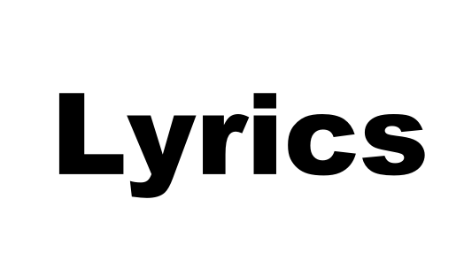

generative song lyrics


lyrics is a project for using Recurrent Neural Networks to generate song lyrics inspired by tensorflow-rnn-shakespeare
Installation¶
You’re going to need tensorflow-gpu==1.12 (old). this project is intended to use an old GPU (GTX 650 compute capability=3.0) which is not officially supported by tensorflow, so compile tensorflow from source first.
some notable tensorflow dependencies:
nvidia-driver-390
cuda=9.0
cuDNN=7.7
nccl==2.2
create a virtual environment¶
python -m virtualenv venv
source venv/bin/activate
install dependencies¶
python -m pip install pkg/tensorflow-1.12.0-cp36-cp36m-linux_x86_64.whl
cd src/recurrent
python -m pip install -r requirements.txt
python setup.py setup.py install
cd src/grapheme2phoneme/grapheme2phoneme
python -m pip install -r requirements.txt
python -m nltk.downloader cmudict
python setup.py develop
Usage:¶
source venv/bin/activate
python rnn_train.py
trains a language model on a directory of txt files (song lyrics or otherwise).
tensorboard --logdir=config.log_dir
rnn_train.py** is set up to save training and validation data as “Tensorboard sumaries” in the “log” folder. They can be visualised with Tensorboard.
python rnn_play.py
uses a trained snapshot (saved to checkpoints folder) to generate a new text.
You can also generate new “Tensorflow Python” code. See comments in the file.
Tests¶
python setup.py install
python -m pytest
generated Beatles¶
Well, it's a long with you
I'm so slad at's time
And I'm going to love you any old way
[Verse 1]
Got a good roasing for the day, the world
If the sun you stile, hame whit me day
I want to be your lover baby
I want to be your man
[Verse 2]
Love you all the time
I'clld so lave you while ever day
I said, I love you
And I'm always thinking of you
Oh, oh, oh
You treat me badly
I love you madly
You've really got a hold on me
You've really got a hold on me, baby
[Chorus]
You've really got a hold on me
DOoh, some insurance on me, baby
Well, if you ever, ever say goodbye
I'm gonna go right home and die
Oh, if you want me, baby
You've gotta come to me
Mm honey
Baby sawk home
Seeks nowhing what sometnd cauld be baunt
Nowhere man come your made yeah
[Verse 2]
The dud as aheit Is going to set you through
Come on, pastencco in in nowhere, pain ag the haie
You can stop theme soresede
Who wan sun you know the walrus und
Her lajj, don't you tell me why con't you tell me what you see
It is no surprise now, what you see is me
Contributing¶
Pull requests are welcome.
Requirements¶
Python 3.6+
Installation¶
pip install lyrics